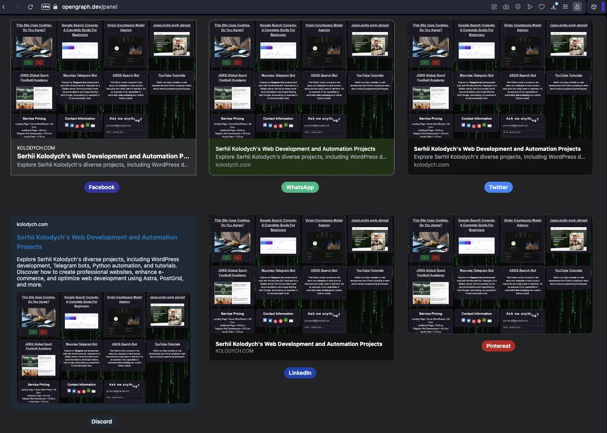

Website Development Tools I use every day
Published on September 25, 2024
- Image Optimization with Image Resizer
- Broken Link Management with Dead Link Checker
- Overview of PageSpeed Insights
- SEO Check Overview with Seobility
- Optimize Your Social Sharing!
Image Optimization with Image Resizer
How do I ensure my images are optimized for web use? With Image Resizer, I can resize, crop, or convert images to formats like JPG, PNG, or WebP. A feature only available for JPEG where you can determine the exact output image size by file size (e.g., 20KB, 30KB, 60KB).
Broken Link Management with Dead Link Checker
How do I track down and resolve broken links on my website without needing to invest in expensive SEO suites? Dead Link Checker provides an affordable alternative, offering both free and paid services for single, multiple, and automated checks.
How did I fix both? I found the manifest link inside the article tags and pointed it to the correct folder. Then, I found out the project is no longer active, so I updated the link with additional tag rel="no-follow".
Overview of PageSpeed Insights
The first screen of Google PageSpeed Insights gives you a quick look at how your website is doing. You’ll see important numbers like performance scores for categories such as Performance, Accessibility, Best Practices, and SEO. These scores range from 0 to 100 and help you understand how well your site is performing overall. You’ll also find key metrics like First Contentful Paint (FCP) and Largest Contentful Paint (LCP), which show you where there’s room for improvement.
The second screen dives deeper, offering a more detailed view that you can expand. Here, you’ll get helpful suggestions to boost your site’s performance. For instance, it may recommend resizing images to save space, using better caching for files, or reducing the work on the main thread. Each tip comes with estimated savings, making it easier for you to make smart choices for improving your site.
SEO Check Overview with Seobility
The Seobility tool offers a comprehensive overview of a website's SEO health. With a detailed assessment, you can gain insights into various aspects of your site’s optimization. You can check your SEO Score, evaluate your meta information, and analyze page quality to ensure your content is effective. The tool also reviews page structure and link quality, providing recommendations for server performance and crawlability to enhance visibility on search engines.
Optimize Your Social Sharing!
Open Graph Meta tags are vital for how your content appears on social platforms including Discord, LinkedIn, Pinterest, WhatsApp, Twitter, and Facebook. These tags help you create an inviting preview that encourages users to click and explore your projects!
